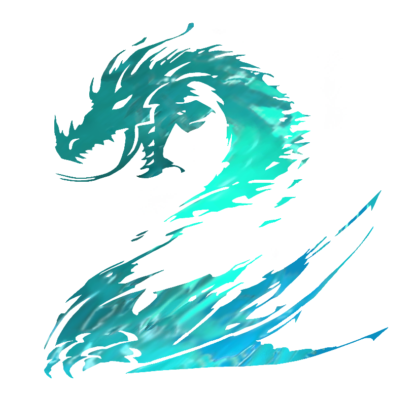

 Guild Wars 2
Details
 |
|
| Spielzeit | 39m 0s |
| Letzte Aktivität | 05.09.2022 20:50:49 |
| Hinzugefügt | 26.08.2022 11:08:51 |
| Modifiziert | 10.11.2022 13:21:55 |
| Fertigstellungsstatus | Gespielt |
| Bibliothek | Steam |
| Quelle | Steam |
| Plattform | PC (Windows) |
| Veröffentlichungsdatum | 23.08.2022 |
| Community Bewertungen | 82 |
| Kritiker Punkte | 90 |
| Benutzerwertung | |
| Genre | Adventure Free to Play MMORPG 🐎 RPG |
| Entwickler | ArenaNet® |
| Verleger | NCSOFT |
| Eigenschaft | Co-op In App Käufe Multiplayer Online Pvp Pvp |
| Links | Communityhub Diskussionen Guides Neuigkeiten Shopseite PCGamingWiki |
| Tag | |
Beschreibung

Guild Wars 2's open world is all about discovery and exploration. Check your content guide for suggestions when you set out on your adventures, consult your compass to find interesting landmarks…or just pick your favorite direction to travel in and let adventure find you. Tyria is full of characters with their own stories and goals, and you'll be rewarded for helping them out—or thwarting their plans—by completing renown hearts and dynamic events. Read our new player guide for more tips!

When you meet other players in the open world, you don't need to join their party to lend a helping hand, investigate a secret jumping puzzle, or team up against a deadly world boss. Don't grind; play the way you want to play! Whether you're reviving defeated players, rescuing soldiers from a Risen onslaught, or gathering herbs, you'll earn experience points.
Arm your character with an arsenal of new weapons as you play. Every profession wields them differently, and each type has its own playstyle, which you can refine and customize by unlocking and equipping hundreds of skills and traits. If you want to jump straight into structured PvP, go for it—every player competes at the same level, with access to the max-level gear and build options you need to make your mark.
If you love fashion, express yourself with the perfect character design! When you equip new weapons and armor, you'll unlock their skins in your wardrobe. Make them truly yours with thousands of possible combinations and a massive selection of collectible dyes.

Upgrade your free account with a Guild Wars 2 expansion and get access to log-in rewards, additional character and bag slots, expanded chat features, and more. Visit the Black Lion Trading Company in the game and use your Steam Wallet to upgrade.

Expansions and Living World seasons feature unique rewards and new Masteries to expand your character's abilities. Unlock and upgrade your glider in Guild Wars 2: Heart of Thorns, befriend a stable of mounts with powerful movement skills in Guild Wars 2: Path of Fire, and learn to fish and pilot a skiff in Guild Wars 2: End of Dragons. Each expansion grants access to nine elite specializations that unlock new weapon choices, skills, and abilities for your profession. You'll also be able to select the revenant profession at character creation and channel legendary heroes and villains from Tyria's history.
Living World seasons continue the Guild Wars 2 story between expansions and must be purchased separately through your Story Journal or in Gem Store bundles. Play Living World episodes to unlock new explorable zones, rewards, and Masteries.
*Living World episodes become playable at level 80. Players may need to relaunch the game for the upgrade to take effect.
**Please note that existing Guild Wars 2 player accounts cannot be accessed via Steam